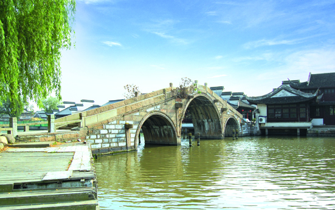

嘉兴市文物保护网 · 市级文物保护单位 · 2014-06-16 · 原文

文星桥位于嘉兴市南湖区南湖街道南湖社区鸳湖路揽秀园东侧，据地方志记载建于清同治六年(1867)。系三孔有栏石拱桥，东西横跨海盐塘，全长30.7米，桥面宽3.15米，大拱跨9.5米，小拱跨6米，桥面距水面高5.1米。桥落坡东有19级石阶，西有18级石阶。桥顶和东落坡护栏各存方形望柱4个，西落坡仅存方形望柱2个，顶盘石中央刻有水涡纹，桥额为“重建文星桥”，桥联因水深无法辨识。文星桥造型优美，形制较大，做工考究，是市区为数不多的拱桥之一，具有较高的历史和科学价值。1992年公布为嘉兴市级文物保护单位。